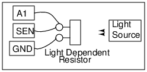

Schematic

Instructions
- The resistance of an LDR reduces with the intensity of light falling on it.
- ExpEYES can measure resistance between the terminal SEN and Ground. Connecting
- SEN to A1 allows us to view the change in resistance.
- Make the connectors as shown in the figure.
- Compare the output at A1 using sunlight and the light from a fluorescent tube.
- Is there any AC component in the case of fluorescent tube ?